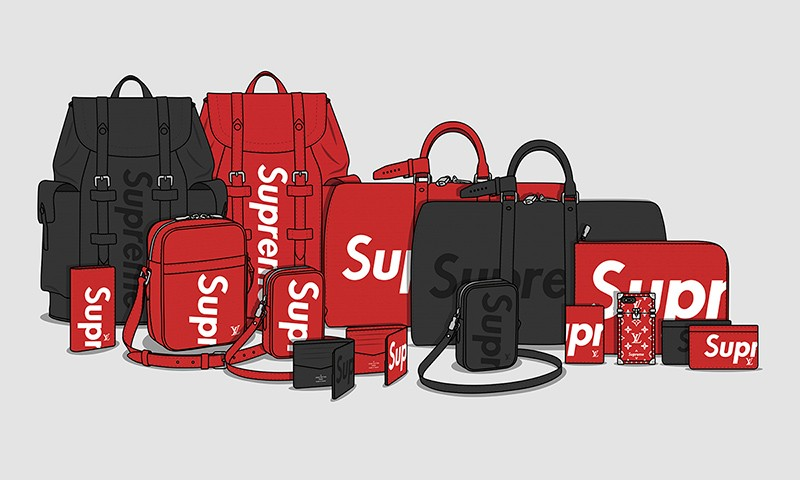

Louis Vuitton

Louis Vuitton was a French box-maker and packer who founded the luxury brand of the same name over 150 years ago.
History
Origin Story
When he was only sixteen years old, Louis Vuitton made a decision that would not only change his own life but the lives of his sons and future generations: he would become a trunk-master.
Louis Vuitton’s heritage as a trunk maker preceded even the founding of the company.
It was in 1837 that a 16-year-old Louis Vuitton arrived in Paris by foot and started apprenticing for Monsieur Maréchal. At the time, horse-drawn carriages, boats and trains were the main modes of transportation, and baggage was handled roughly. Travelers called upon craftsmen to pack and protect their individual objects.
Louis Vuitton quickly became a valued craftsman at the Parisian atelier of Monsieur Maréchal. These were the roots of his highly specialized trade; the beginnings of his career in an artisanal industry that called upon skills to custom design boxes and, later, trunks according to clients’ wishes. Louis Vuitton stayed for 17 years before opening his own workshop at 4 Rue Neuve-des-Capucines near the Place Vendome.
Creators/Designers
When Napoleon assumed the title of Emperor of the French in 1852, his wife hired Louis Vuitton as her personal box-maker and packer. This provided a gateway for Vuitton to a class of elite and royal clientele who would seek his services for the duration of his life and far beyond, as the Louis Vuitton brand would grow into the world-renowned luxury leather and lifestyle brand it is today.
Collaborations
Takashi Murakami created special edition collections, such as the Monogramouflage Collection, which debuted in 2008, and a previous collection, released in 2002, which featured some of his artwork. The creations were "painted" over the traditional monogram canvas, which brought a radical new twist to the timeless design.

In 2017 Louis Vuitton collaborated with American streetwear brand Supreme, releasing products in various pop-up stores in major cities around the world. Items feature the Louis Vuitton monogram canvas mixed with the Supreme box-logo design.
Information collected from wikipedia